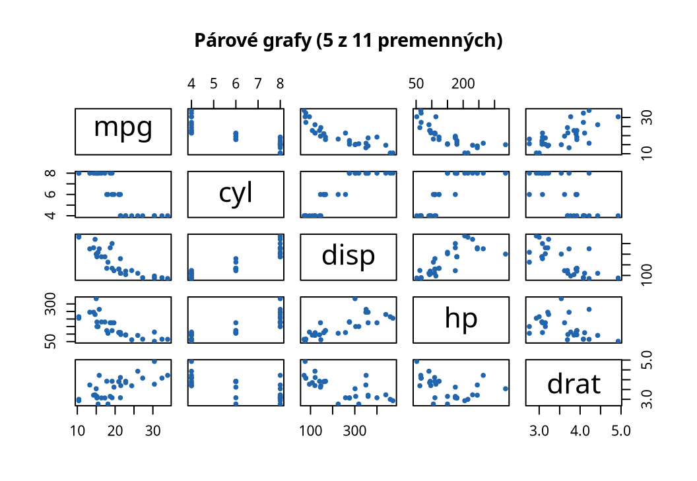
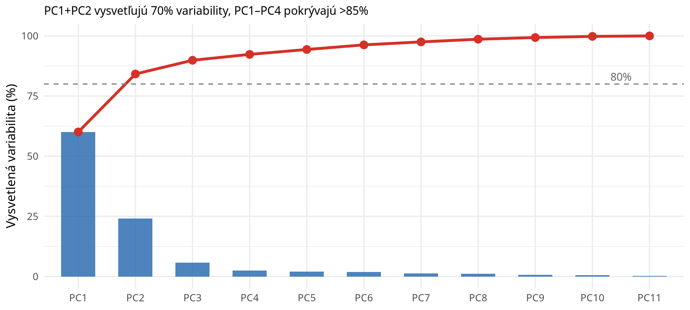
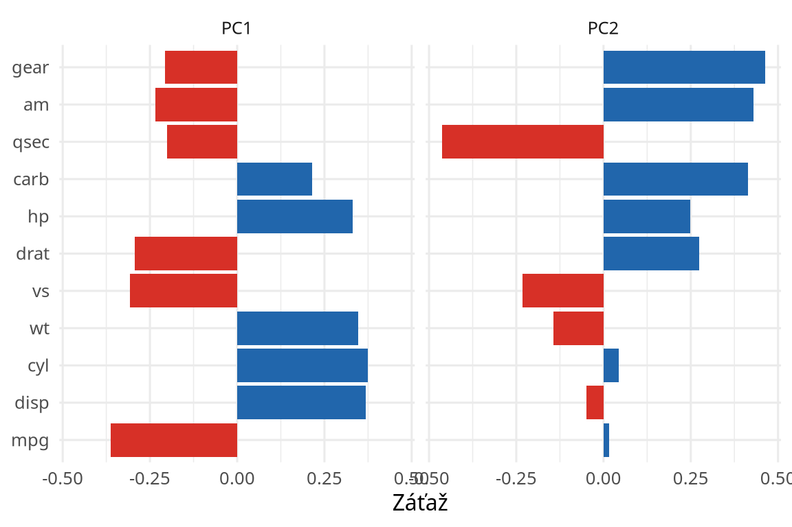

Analýza hlavných komponentov (PCA)
Softvér na analýzu údajov — Projektová správa
2026-04-29
Matematické základy
Algoritmus PCA — 4 kroky:
-
<<<<<<< HEAD
- Štandardizácia: \(z_{ij} = \dfrac{x_{ij} - \bar{x}_j}{s_j}\)
- Kovariančná matica: \(\mathbf{C} = \dfrac{1}{n-1}\mathbf{Z}^\top\mathbf{Z}\)
- Spektrálny rozklad: \(\mathbf{C}\mathbf{v}_i = \lambda_i \mathbf{v}_i\)
- Projekcia: \(\mathbf{PC}_k = \mathbf{Z}\mathbf{v}_k\)
Vysvetlená variabilita \(k\)-teho komponentu:
\[\text{PVE}_k = \frac{\lambda_k}{\sum_{i=1}^{p} \lambda_i} \times 100\%\]
=======Štandardizácia: \(z_{ij} = \dfrac{x_{ij} - \bar{x}_j}{s_j}\)
Kovariančná matica: \(\mathbf{C} = \dfrac{1}{n-1}\mathbf{Z}^\top\mathbf{Z}\)
Spektrálny rozklad: \(\mathbf{C}\mathbf{v}_i = \lambda_i \mathbf{v}_i\)
Projekcia: \(\mathbf{PC}_k = \mathbf{Z}\mathbf{v}_k\)
Vysvetlená variabilita \(k\)-teho komponentu: \[\text{PVE}_k = \frac{\lambda_k}{\sum_{i=1}^{p} \lambda_i} \times 100\%\]
>>>>>>> d560a1f (Vylepšená prezentácia a dashboard)Výpočet PCA v R
<<<<<<< HEAD
<<<<<<< HEAD
=======
>>>>>>> d560a1f (Vylepšená prezentácia a dashboard)


=======

>>>>>>> d560a1f (Vylepšená prezentácia a dashboard)
<<<<<<< HEAD
<<<<<<< HEAD
>>>>>>> d560a1f (Vylepšená prezentácia a dashboard)
pca <- prcomp(mtcars,
=======
pca <- prcomp(mtcars,
>>>>>>> d560a1f (Vylepšená prezentácia a dashboard)
center = TRUE,
scale. = TRUE)
lambda <- pca$sdev^2
<<<<<<< HEAD
pve <- lambda / sum(lambda) * 100
data.frame(
PC = paste0("PC", 1:5),
Eigenvalue = round(lambda[1:5], 2),
PVE = round(pve[1:5], 2),
=======
pve <- lambda / sum(lambda) * 100
data.frame(
PC = paste0("PC", 1:5),
Eigenvalue = round(lambda[1:5], 2),
PVE = round(pve[1:5], 2),
>>>>>>> d560a1f (Vylepšená prezentácia a dashboard)
Cumulative = round(cumsum(pve)[1:5], 2)
)
PC Eigenvalue PVE Cumulative
1 PC1 6.61 60.08 60.08
2 PC2 2.65 24.10 84.17
3 PC3 0.63 5.70 89.87
4 PC4 0.27 2.45 92.32
5 PC5 0.22 2.03 94.36Scree Plot
<<<<<<< HEAD
Biplót — projekcia do 2D


Biplót — projekcia do 2D
Interpretácia komponentov
PC1 — „Sila vozidla” (60.1%)
- ➕
cyl,disp,hp,wt,carb - ➖
mpg,drat
Silnejší motor = vyššia spotreba
PC2 — „Konfigurácia” (24.1%)
- ➕
qsec,vs - ➖
carb,hp

=======